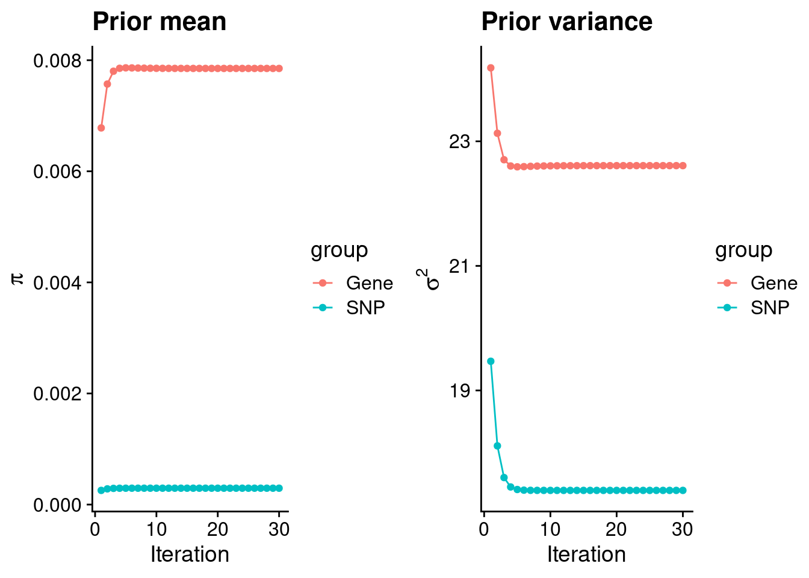
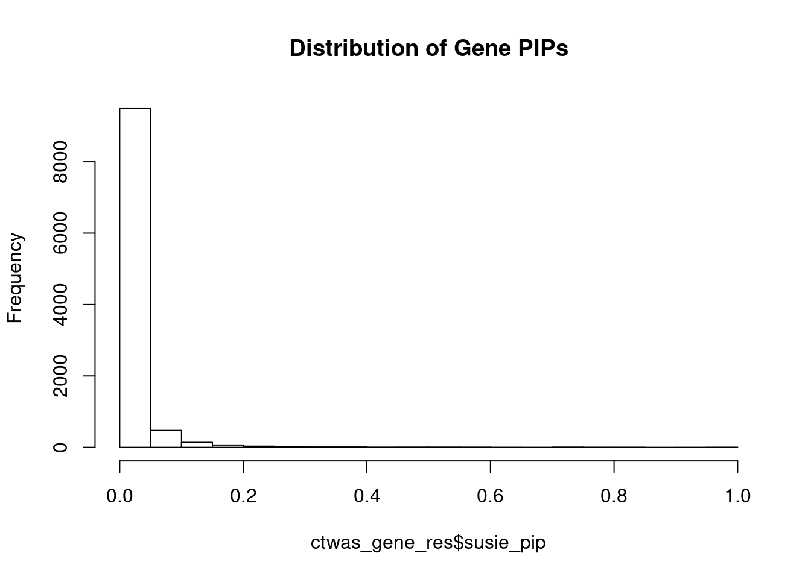
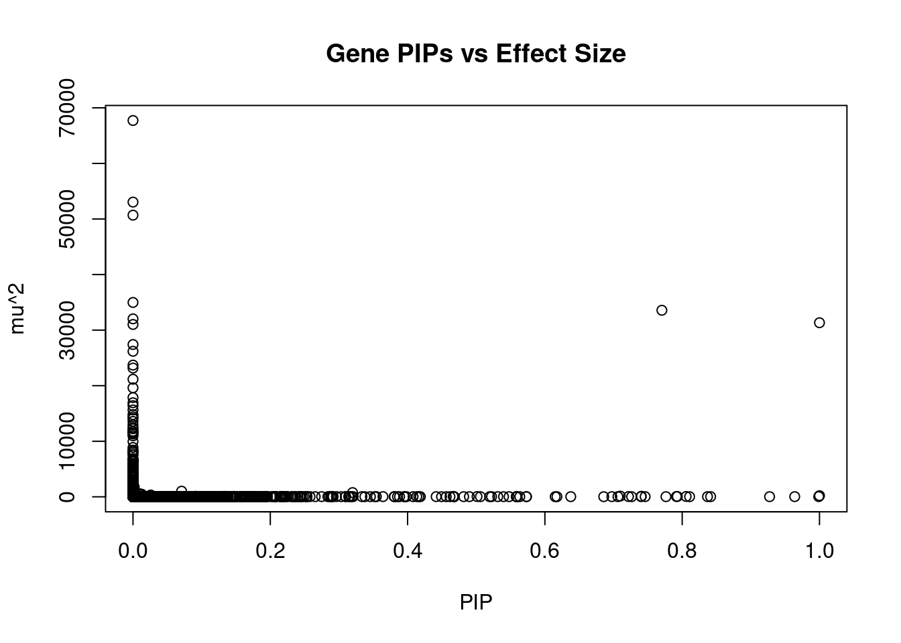
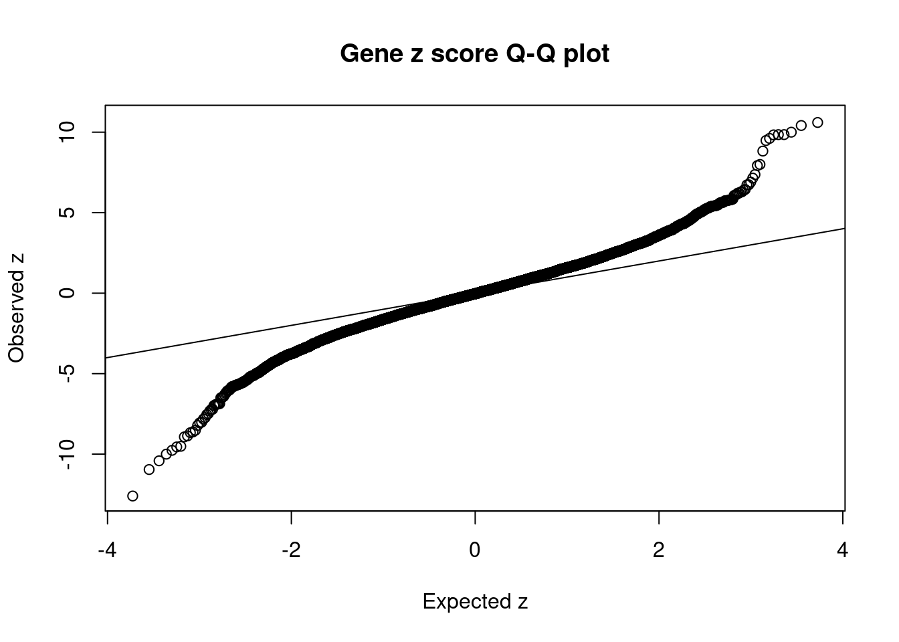
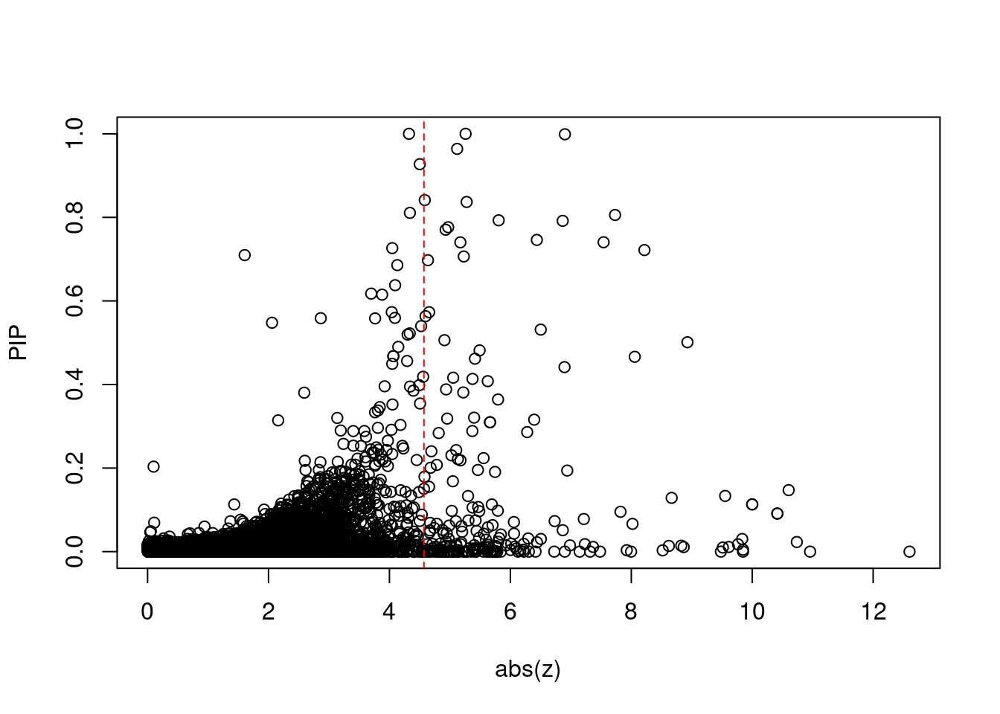
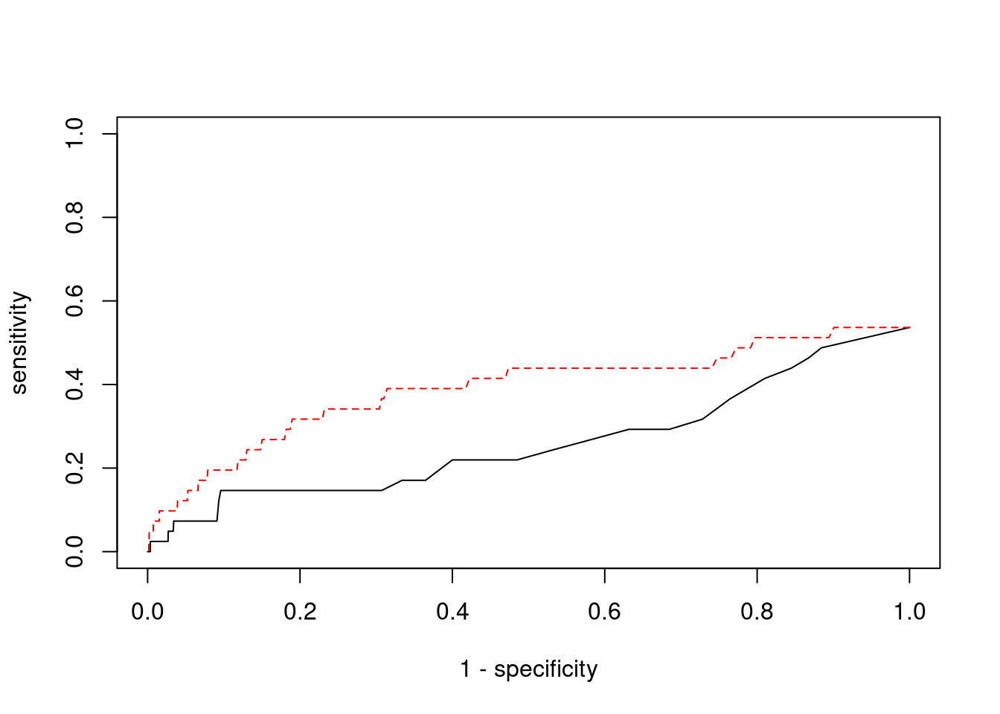

Last updated: 2022-02-13
Checks: 6 1
Knit directory: cTWAS_analysis/
This reproducible R Markdown analysis was created with workflowr (version 1.6.2). The Checks tab describes the reproducibility checks that were applied when the results were created. The Past versions tab lists the development history.
Great! Since the R Markdown file has been committed to the Git repository, you know the exact version of the code that produced these results.
Great job! The global environment was empty. Objects defined in the global environment can affect the analysis in your R Markdown file in unknown ways. For reproduciblity it’s best to always run the code in an empty environment.
The command set.seed(20211220) was run prior to running the code in the R Markdown file. Setting a seed ensures that any results that rely on randomness, e.g. subsampling or permutations, are reproducible.
Great job! Recording the operating system, R version, and package versions is critical for reproducibility.
Nice! There were no cached chunks for this analysis, so you can be confident that you successfully produced the results during this run.
Using absolute paths to the files within your workflowr project makes it difficult for you and others to run your code on a different machine. Change the absolute path(s) below to the suggested relative path(s) to make your code more reproducible.
| absolute | relative |
|---|---|
| /project2/xinhe/shengqian/cTWAS/cTWAS_analysis/data/ | data |
| /project2/xinhe/shengqian/cTWAS/cTWAS_analysis/code/ctwas_config.R | code/ctwas_config.R |
Great! You are using Git for version control. Tracking code development and connecting the code version to the results is critical for reproducibility.
The results in this page were generated with repository version 87fee8b. See the Past versions tab to see a history of the changes made to the R Markdown and HTML files.
Note that you need to be careful to ensure that all relevant files for the analysis have been committed to Git prior to generating the results (you can use wflow_publish or wflow_git_commit). workflowr only checks the R Markdown file, but you know if there are other scripts or data files that it depends on. Below is the status of the Git repository when the results were generated:
Ignored files:
Ignored: .ipynb_checkpoints/
Untracked files:
Untracked: code/.ipynb_checkpoints/
Untracked: code/AF_out/
Untracked: code/BMI_out/
Untracked: code/T2D_out/
Untracked: code/ctwas_config.R
Untracked: code/mapping.R
Untracked: code/out/
Untracked: code/run_AF_analysis.sbatch
Untracked: code/run_AF_analysis.sh
Untracked: code/run_AF_ctwas_rss_LDR.R
Untracked: code/run_BMI_analysis.sbatch
Untracked: code/run_BMI_analysis.sh
Untracked: code/run_BMI_ctwas_rss_LDR.R
Untracked: code/run_T2D_analysis.sbatch
Untracked: code/run_T2D_analysis.sh
Untracked: code/run_T2D_ctwas_rss_LDR.R
Untracked: data/.ipynb_checkpoints/
Untracked: data/AF/
Untracked: data/BMI/
Untracked: data/T2D/
Untracked: data/UKBB/
Untracked: data/UKBB_SNPs_Info.text
Untracked: data/gene_OMIM.txt
Untracked: data/gene_pip_0.8.txt
Untracked: data/mashr_Heart_Atrial_Appendage.db
Untracked: data/summary_known_genes_annotations.xlsx
Untracked: data/untitled.txt
Note that any generated files, e.g. HTML, png, CSS, etc., are not included in this status report because it is ok for generated content to have uncommitted changes.
These are the previous versions of the repository in which changes were made to the R Markdown (analysis/BMI_Brain_Amygdala.Rmd) and HTML (docs/BMI_Brain_Amygdala.html) files. If you’ve configured a remote Git repository (see ?wflow_git_remote), click on the hyperlinks in the table below to view the files as they were in that past version.
| File | Version | Author | Date | Message |
|---|---|---|---|---|
| Rmd | 87fee8b | sq-96 | 2022-02-13 | update |
qclist_all <- list()
qc_files <- paste0(results_dir, "/", list.files(results_dir, pattern="exprqc.Rd"))
for (i in 1:length(qc_files)){
load(qc_files[i])
chr <- unlist(strsplit(rev(unlist(strsplit(qc_files[i], "_")))[1], "[.]"))[1]
qclist_all[[chr]] <- cbind(do.call(rbind, lapply(qclist,unlist)), as.numeric(substring(chr,4)))
}
qclist_all <- data.frame(do.call(rbind, qclist_all))
colnames(qclist_all)[ncol(qclist_all)] <- "chr"
rm(qclist, wgtlist, z_gene_chr)
#number of imputed weights
nrow(qclist_all)[1] 10285#number of imputed weights by chromosome
table(qclist_all$chr)
1 2 3 4 5 6 7 8 9 10 11 12 13 14 15 16
1009 735 594 399 502 598 475 370 404 396 626 561 223 326 336 453
17 18 19 20 21 22
604 162 819 311 117 265 #number of imputed weights without missing variants
sum(qclist_all$nmiss==0)[1] 8365#proportion of imputed weights without missing variants
mean(qclist_all$nmiss==0)[1] 0.8133204library(ggplot2)
library(cowplot)
********************************************************Note: As of version 1.0.0, cowplot does not change the default ggplot2 theme anymore. To recover the previous behavior, execute:
theme_set(theme_cowplot())********************************************************load(paste0(results_dir, "/", analysis_id, "_ctwas.s2.susieIrssres.Rd"))
df <- data.frame(niter = rep(1:ncol(group_prior_rec), 2),
value = c(group_prior_rec[1,], group_prior_rec[2,]),
group = rep(c("Gene", "SNP"), each = ncol(group_prior_rec)))
df$group <- as.factor(df$group)
df$value[df$group=="SNP"] <- df$value[df$group=="SNP"]*thin #adjust parameter to account for thin argument
p_pi <- ggplot(df, aes(x=niter, y=value, group=group)) +
geom_line(aes(color=group)) +
geom_point(aes(color=group)) +
xlab("Iteration") + ylab(bquote(pi)) +
ggtitle("Prior mean") +
theme_cowplot()
df <- data.frame(niter = rep(1:ncol(group_prior_var_rec), 2),
value = c(group_prior_var_rec[1,], group_prior_var_rec[2,]),
group = rep(c("Gene", "SNP"), each = ncol(group_prior_var_rec)))
df$group <- as.factor(df$group)
p_sigma2 <- ggplot(df, aes(x=niter, y=value, group=group)) +
geom_line(aes(color=group)) +
geom_point(aes(color=group)) +
xlab("Iteration") + ylab(bquote(sigma^2)) +
ggtitle("Prior variance") +
theme_cowplot()
plot_grid(p_pi, p_sigma2)
#estimated group prior
estimated_group_prior <- group_prior_rec[,ncol(group_prior_rec)]
names(estimated_group_prior) <- c("gene", "snp")
estimated_group_prior["snp"] <- estimated_group_prior["snp"]*thin #adjust parameter to account for thin argument
print(estimated_group_prior) gene snp
0.007851899 0.000294515 #estimated group prior variance
estimated_group_prior_var <- group_prior_var_rec[,ncol(group_prior_var_rec)]
names(estimated_group_prior_var) <- c("gene", "snp")
print(estimated_group_prior_var) gene snp
22.60976 17.39546 #report sample size
print(sample_size)[1] 336107#report group size
group_size <- c(nrow(ctwas_gene_res), n_snps)
print(group_size)[1] 10285 7535010#estimated group PVE
estimated_group_pve <- estimated_group_prior_var*estimated_group_prior*group_size/sample_size #check PVE calculation
names(estimated_group_pve) <- c("gene", "snp")
print(estimated_group_pve) gene snp
0.005432472 0.114854919 #compare sum(PIP*mu2/sample_size) with above PVE calculation
c(sum(ctwas_gene_res$PVE),sum(ctwas_snp_res$PVE))[1] 0.185928 16.123047#distribution of PIPs
hist(ctwas_gene_res$susie_pip, xlim=c(0,1), main="Distribution of Gene PIPs")
#genes with PIP>0.8 or 20 highest PIPs
head(ctwas_gene_res[order(-ctwas_gene_res$susie_pip),report_cols], max(sum(ctwas_gene_res$susie_pip>0.8), 20)) genename region_tag susie_pip mu2 PVE z
7067 PPM1M 3_36 0.9999997 203.84849 6.064986e-04 4.323157
9534 GSAP 7_49 0.9999978 31328.55559 9.320986e-02 5.259703
9062 TMIE 3_33 0.9988879 35.22577 1.046887e-04 -6.902292
3144 CCND2 12_4 0.9639272 29.09831 8.345155e-05 -5.119990
2362 B3GAT1 11_84 0.9273265 25.66174 7.080130e-05 -4.502212
7314 CASP7 10_71 0.8414194 24.92437 6.239635e-05 4.584307
1743 TSC2 16_2 0.8368816 30.80080 7.669172e-05 5.277516
10858 SLC12A8 3_77 0.8107856 22.51325 5.430835e-05 -4.338310
129 CELSR3 3_34 0.8057692 57.16502 1.370451e-04 -7.731481
4947 SUOX 12_35 0.7929490 57.58570 1.358571e-04 -5.806919
6745 TAL1 1_29 0.7916142 49.62828 1.168867e-04 -6.865849
7155 ZNF12 7_9 0.7763657 25.85263 5.971639e-05 4.971723
4469 HEY2 6_84 0.7704396 33571.88962 7.695500e-02 4.929525
12540 RP11-823E8.3 12_54 0.7460382 31.12767 6.909237e-05 -6.438012
8259 EFEMP2 11_36 0.7404485 97.56353 2.149338e-04 -7.541972
3049 PRRC2C 1_84 0.7401647 28.98860 6.383782e-05 -5.172951
2893 SLC1A4 2_42 0.7263618 23.45522 5.068914e-05 -4.046858
7589 NCKAP5L 12_31 0.7217699 48.19952 1.035056e-04 -8.217199
10874 VPS52 6_28 0.7097286 125.93060 2.659169e-04 1.606101
12020 LINC01977 17_45 0.7064264 28.56807 6.004409e-05 5.229978
num_eqtl
7067 2
9534 1
9062 2
3144 1
2362 2
7314 1
1743 1
10858 1
129 1
4947 1
6745 1
7155 2
4469 1
12540 1
8259 2
3049 1
2893 1
7589 1
10874 1
12020 1#plot PIP vs effect size
plot(ctwas_gene_res$susie_pip, ctwas_gene_res$mu2, xlab="PIP", ylab="mu^2", main="Gene PIPs vs Effect Size")
#genes with 20 largest effect sizes
head(ctwas_gene_res[order(-ctwas_gene_res$mu2),report_cols],20) genename region_tag susie_pip mu2 PVE z
9746 SLC38A3 3_35 0.000000e+00 67723.85 0.000000e+00 6.725828
7061 CAMKV 3_35 0.000000e+00 53039.36 0.000000e+00 9.847856
7212 CCDC171 9_13 0.000000e+00 50688.31 0.000000e+00 7.996551
7063 MST1R 3_35 0.000000e+00 34978.09 0.000000e+00 -12.601517
4469 HEY2 6_84 7.704396e-01 33571.89 7.695500e-02 4.929525
8838 DHFR2 3_59 0.000000e+00 32025.16 0.000000e+00 5.146136
9534 GSAP 7_49 9.999978e-01 31328.56 9.320986e-02 5.259703
8841 STX19 3_59 0.000000e+00 31018.31 0.000000e+00 -5.059656
7432 LEO1 15_21 2.077396e-07 27408.83 1.694073e-08 4.647326
5003 LYSMD2 15_21 0.000000e+00 26190.38 0.000000e+00 -4.402599
4997 MFAP1 15_16 1.607848e-07 23703.02 1.133891e-08 4.302998
7058 RNF123 3_35 0.000000e+00 23171.66 0.000000e+00 -10.957103
1259 WDR76 15_16 0.000000e+00 21159.20 0.000000e+00 4.858858
9777 DPYD 1_60 0.000000e+00 19617.83 0.000000e+00 -3.213351
849 MCM6 2_80 0.000000e+00 17859.24 0.000000e+00 -3.886179
4751 TUBGCP4 15_16 0.000000e+00 16922.11 0.000000e+00 3.371262
10116 ENTPD6 20_18 0.000000e+00 16404.93 0.000000e+00 -5.560735
8836 NSUN3 3_59 0.000000e+00 15636.11 0.000000e+00 4.755360
7782 ADAL 15_16 0.000000e+00 14787.91 0.000000e+00 -2.861302
7783 LCMT2 15_16 0.000000e+00 14375.85 0.000000e+00 -3.087238
num_eqtl
9746 1
7061 1
7212 1
7063 2
4469 1
8838 1
9534 1
8841 1
7432 1
5003 1
4997 1
7058 1
1259 2
9777 1
849 1
4751 1
10116 1
8836 1
7782 1
7783 2#genes with 20 highest pve
head(ctwas_gene_res[order(-ctwas_gene_res$PVE),report_cols],20) genename region_tag susie_pip mu2 PVE z
9534 GSAP 7_49 0.99999775 31328.55559 9.320986e-02 5.259703
4469 HEY2 6_84 0.77043964 33571.88962 7.695500e-02 4.929525
9966 TTC30B 2_107 0.31986906 757.36112 7.207716e-04 -3.137443
7067 PPM1M 3_36 0.99999975 203.84849 6.064986e-04 4.323157
10874 VPS52 6_28 0.70972860 125.93060 2.659169e-04 1.606101
8259 EFEMP2 11_36 0.74044851 97.56353 2.149338e-04 -7.541972
7134 SFXN1 5_105 0.07080249 1012.69819 2.133296e-04 -3.397633
129 CELSR3 3_34 0.80576915 57.16502 1.370451e-04 -7.731481
4947 SUOX 12_35 0.79294903 57.58570 1.358571e-04 -5.806919
6745 TAL1 1_29 0.79161423 49.62828 1.168867e-04 -6.865849
9062 TMIE 3_33 0.99888787 35.22577 1.046887e-04 -6.902292
7589 NCKAP5L 12_31 0.72176991 48.19952 1.035056e-04 -8.217199
9164 KCNB2 8_53 0.46637380 63.18433 8.767302e-05 -8.057392
3144 CCND2 12_4 0.96392719 29.09831 8.345155e-05 -5.119990
1743 TSC2 16_2 0.83688159 30.80080 7.669172e-05 5.277516
2362 B3GAT1 11_84 0.92732651 25.66174 7.080130e-05 -4.502212
12540 RP11-823E8.3 12_54 0.74603817 31.12767 6.909237e-05 -6.438012
8212 NEGR1 1_46 0.50118261 45.66722 6.809622e-05 -8.928461
3049 PRRC2C 1_84 0.74016474 28.98860 6.383782e-05 -5.172951
7314 CASP7 10_71 0.84141937 24.92437 6.239635e-05 4.584307
num_eqtl
9534 1
4469 1
9966 1
7067 2
10874 1
8259 2
7134 1
129 1
4947 1
6745 1
9062 2
7589 1
9164 2
3144 1
1743 1
2362 2
12540 1
8212 1
3049 1
7314 1#genes with 20 largest z scores
head(ctwas_gene_res[order(-abs(ctwas_gene_res$z)),report_cols],20) genename region_tag susie_pip mu2 PVE
7063 MST1R 3_35 0.000000e+00 34978.09479 0.000000e+00
7058 RNF123 3_35 0.000000e+00 23171.66318 0.000000e+00
5866 TAOK2 16_24 2.301334e-02 95.97347 6.571330e-06
11609 RP11-1348G14.4 16_23 1.472303e-01 90.56867 3.967325e-05
9939 SULT1A1 16_23 9.114419e-02 89.14576 2.417420e-05
10040 SULT1A2 16_23 9.114419e-02 89.14576 2.417420e-05
7566 ZNF668 16_24 1.131017e-01 77.72272 2.615409e-05
7567 ZNF646 16_24 1.131017e-01 77.72272 2.615409e-05
5192 SAE1 19_33 4.601078e-03 101.24760 1.386011e-06
7061 CAMKV 3_35 0.000000e+00 53039.36047 0.000000e+00
8211 C1QTNF4 11_29 3.022724e-02 96.81883 8.707246e-06
439 PRSS8 16_24 1.754656e-02 72.63603 3.791985e-06
7337 RAPSN 11_29 1.109988e-02 87.10822 2.876734e-06
10701 LAT 16_23 1.333217e-01 85.22211 3.380459e-05
2358 MTCH2 11_29 9.831627e-03 84.50940 2.472025e-06
11572 CTC-467M3.3 5_52 1.492286e-10 355.29867 1.577496e-13
8212 NEGR1 1_46 5.011826e-01 45.66722 6.809622e-05
7336 PSMC3 11_29 1.088521e-02 74.51731 2.413329e-06
1699 MAPK3 16_24 1.421618e-02 68.98855 2.917980e-06
12567 RCC1L 7_48 1.286620e-01 83.57640 3.199311e-05
z num_eqtl
7063 -12.601517 2
7058 -10.957103 1
5866 10.737701 1
11609 10.603060 1
9939 10.415275 1
10040 -10.415275 1
7566 10.000364 1
7567 -10.000364 1
5192 9.848747 1
7061 9.847856 1
8211 9.834145 2
439 -9.764760 1
7337 9.613541 1
10701 -9.552834 1
2358 -9.514152 1
11572 9.482167 1
8212 -8.928461 1
7336 -8.866477 1
1699 8.826267 1
12567 -8.667336 1#set nominal signifiance threshold for z scores
alpha <- 0.05
#bonferroni adjusted threshold for z scores
sig_thresh <- qnorm(1-(alpha/nrow(ctwas_gene_res)/2), lower=T)
#Q-Q plot for z scores
obs_z <- ctwas_gene_res$z[order(ctwas_gene_res$z)]
exp_z <- qnorm((1:nrow(ctwas_gene_res))/nrow(ctwas_gene_res))
plot(exp_z, obs_z, xlab="Expected z", ylab="Observed z", main="Gene z score Q-Q plot")
abline(a=0,b=1)
#plot z score vs PIP
plot(abs(ctwas_gene_res$z), ctwas_gene_res$susie_pip, xlab="abs(z)", ylab="PIP")
abline(v=sig_thresh, col="red", lty=2)
#proportion of significant z scores
mean(abs(ctwas_gene_res$z) > sig_thresh)[1] 0.02129315#genes with most significant z scores
head(ctwas_gene_res[order(-abs(ctwas_gene_res$z)),report_cols],20) genename region_tag susie_pip mu2 PVE
7063 MST1R 3_35 0.000000e+00 34978.09479 0.000000e+00
7058 RNF123 3_35 0.000000e+00 23171.66318 0.000000e+00
5866 TAOK2 16_24 2.301334e-02 95.97347 6.571330e-06
11609 RP11-1348G14.4 16_23 1.472303e-01 90.56867 3.967325e-05
9939 SULT1A1 16_23 9.114419e-02 89.14576 2.417420e-05
10040 SULT1A2 16_23 9.114419e-02 89.14576 2.417420e-05
7566 ZNF668 16_24 1.131017e-01 77.72272 2.615409e-05
7567 ZNF646 16_24 1.131017e-01 77.72272 2.615409e-05
5192 SAE1 19_33 4.601078e-03 101.24760 1.386011e-06
7061 CAMKV 3_35 0.000000e+00 53039.36047 0.000000e+00
8211 C1QTNF4 11_29 3.022724e-02 96.81883 8.707246e-06
439 PRSS8 16_24 1.754656e-02 72.63603 3.791985e-06
7337 RAPSN 11_29 1.109988e-02 87.10822 2.876734e-06
10701 LAT 16_23 1.333217e-01 85.22211 3.380459e-05
2358 MTCH2 11_29 9.831627e-03 84.50940 2.472025e-06
11572 CTC-467M3.3 5_52 1.492286e-10 355.29867 1.577496e-13
8212 NEGR1 1_46 5.011826e-01 45.66722 6.809622e-05
7336 PSMC3 11_29 1.088521e-02 74.51731 2.413329e-06
1699 MAPK3 16_24 1.421618e-02 68.98855 2.917980e-06
12567 RCC1L 7_48 1.286620e-01 83.57640 3.199311e-05
z num_eqtl
7063 -12.601517 2
7058 -10.957103 1
5866 10.737701 1
11609 10.603060 1
9939 10.415275 1
10040 -10.415275 1
7566 10.000364 1
7567 -10.000364 1
5192 9.848747 1
7061 9.847856 1
8211 9.834145 2
439 -9.764760 1
7337 9.613541 1
10701 -9.552834 1
2358 -9.514152 1
11572 9.482167 1
8212 -8.928461 1
7336 -8.866477 1
1699 8.826267 1
12567 -8.667336 1library("readxl")
known_annotations <- read_xlsx("data/summary_known_genes_annotations.xlsx", sheet="BMI")
known_annotations <- unique(known_annotations$`Gene Symbol`)
unrelated_genes <- ctwas_gene_res$genename[!(ctwas_gene_res$genename %in% known_annotations)]
#number of genes in known annotations
print(length(known_annotations))[1] 41#number of genes in known annotations with imputed expression
print(sum(known_annotations %in% ctwas_gene_res$genename))[1] 22#assign ctwas, TWAS, and bystander genes
ctwas_genes <- ctwas_gene_res$genename[ctwas_gene_res$susie_pip>0.8]
twas_genes <- ctwas_gene_res$genename[abs(ctwas_gene_res$z)>sig_thresh]
novel_genes <- ctwas_genes[!(ctwas_genes %in% twas_genes)]
#significance threshold for TWAS
print(sig_thresh)[1] 4.57068#number of ctwas genes
length(ctwas_genes)[1] 9#number of TWAS genes
length(twas_genes)[1] 219#show novel genes (ctwas genes with not in TWAS genes)
ctwas_gene_res[ctwas_gene_res$genename %in% novel_genes,report_cols] genename region_tag susie_pip mu2 PVE z num_eqtl
7067 PPM1M 3_36 0.9999997 203.84849 6.064986e-04 4.323157 2
10858 SLC12A8 3_77 0.8107856 22.51325 5.430835e-05 -4.338310 1
2362 B3GAT1 11_84 0.9273265 25.66174 7.080130e-05 -4.502212 2#sensitivity / recall
sensitivity <- rep(NA,2)
names(sensitivity) <- c("ctwas", "TWAS")
sensitivity["ctwas"] <- sum(ctwas_genes %in% known_annotations)/length(known_annotations)
sensitivity["TWAS"] <- sum(twas_genes %in% known_annotations)/length(known_annotations)
sensitivity ctwas TWAS
0.00000000 0.09756098 #specificity
specificity <- rep(NA,2)
names(specificity) <- c("ctwas", "TWAS")
specificity["ctwas"] <- sum(!(unrelated_genes %in% ctwas_genes))/length(unrelated_genes)
specificity["TWAS"] <- sum(!(unrelated_genes %in% twas_genes))/length(unrelated_genes)
specificity ctwas TWAS
0.9991231 0.9790510 #precision / PPV
precision <- rep(NA,2)
names(precision) <- c("ctwas", "TWAS")
precision["ctwas"] <- sum(ctwas_genes %in% known_annotations)/length(ctwas_genes)
precision["TWAS"] <- sum(twas_genes %in% known_annotations)/length(twas_genes)
precision ctwas TWAS
0.00000000 0.01826484 #ROC curves
pip_range <- (0:1000)/1000
sensitivity <- rep(NA, length(pip_range))
specificity <- rep(NA, length(pip_range))
for (index in 1:length(pip_range)){
pip <- pip_range[index]
ctwas_genes <- ctwas_gene_res$genename[ctwas_gene_res$susie_pip>=pip]
sensitivity[index] <- sum(ctwas_genes %in% known_annotations)/length(known_annotations)
specificity[index] <- sum(!(unrelated_genes %in% ctwas_genes))/length(unrelated_genes)
}
plot(1-specificity, sensitivity, type="l", xlim=c(0,1), ylim=c(0,1))
sig_thresh_range <- seq(from=0, to=max(abs(ctwas_gene_res$z)), length.out=length(pip_range))
for (index in 1:length(sig_thresh_range)){
sig_thresh_plot <- sig_thresh_range[index]
twas_genes <- ctwas_gene_res$genename[abs(ctwas_gene_res$z)>=sig_thresh_plot]
sensitivity[index] <- sum(twas_genes %in% known_annotations)/length(known_annotations)
specificity[index] <- sum(!(unrelated_genes %in% twas_genes))/length(unrelated_genes)
}
lines(1-specificity, sensitivity, xlim=c(0,1), ylim=c(0,1), col="red", lty=2)
sessionInfo()R version 3.6.1 (2019-07-05)
Platform: x86_64-pc-linux-gnu (64-bit)
Running under: Scientific Linux 7.4 (Nitrogen)
Matrix products: default
BLAS/LAPACK: /software/openblas-0.2.19-el7-x86_64/lib/libopenblas_haswellp-r0.2.19.so
locale:
[1] LC_CTYPE=en_US.UTF-8 LC_NUMERIC=C
[3] LC_TIME=en_US.UTF-8 LC_COLLATE=en_US.UTF-8
[5] LC_MONETARY=en_US.UTF-8 LC_MESSAGES=en_US.UTF-8
[7] LC_PAPER=en_US.UTF-8 LC_NAME=C
[9] LC_ADDRESS=C LC_TELEPHONE=C
[11] LC_MEASUREMENT=en_US.UTF-8 LC_IDENTIFICATION=C
attached base packages:
[1] stats graphics grDevices utils datasets methods base
other attached packages:
[1] readxl_1.3.1 cowplot_1.0.0 ggplot2_3.3.5 workflowr_1.6.2
loaded via a namespace (and not attached):
[1] tidyselect_1.1.1 xfun_0.29 purrr_0.3.4 colorspace_2.0-2
[5] vctrs_0.3.8 generics_0.1.1 htmltools_0.5.2 yaml_2.2.1
[9] utf8_1.2.2 blob_1.2.2 rlang_0.4.12 jquerylib_0.1.4
[13] later_0.8.0 pillar_1.6.4 glue_1.5.1 withr_2.4.3
[17] DBI_1.1.1 bit64_4.0.5 lifecycle_1.0.1 stringr_1.4.0
[21] cellranger_1.1.0 munsell_0.5.0 gtable_0.3.0 evaluate_0.14
[25] memoise_2.0.1 labeling_0.4.2 knitr_1.36 fastmap_1.1.0
[29] httpuv_1.5.1 fansi_0.5.0 highr_0.9 Rcpp_1.0.7
[33] promises_1.0.1 scales_1.1.1 cachem_1.0.6 farver_2.1.0
[37] fs_1.5.2 bit_4.0.4 digest_0.6.29 stringi_1.7.6
[41] dplyr_1.0.7 rprojroot_2.0.2 grid_3.6.1 tools_3.6.1
[45] magrittr_2.0.1 tibble_3.1.6 RSQLite_2.2.8 crayon_1.4.2
[49] whisker_0.3-2 pkgconfig_2.0.3 ellipsis_0.3.2 data.table_1.14.2
[53] assertthat_0.2.1 rmarkdown_2.11 R6_2.5.1 git2r_0.26.1
[57] compiler_3.6.1